Bestuursplatform pensioenfondsen
Kwaliteit van besluitvorming borgen onder toenemende complexiteit, tijdsdruk en toezicht.
Betere besluitvorming in het tijdperk van AI
Een platform dat besturen helpt om complexe besluiten grondiger voor te bereiden, sterker te onderbouwen, helderder uit te leggen en reproduceerbaar te maken.
Besluit centraal
Niet documenten of vergaderingen, maar het besluit zelf vormt het hart van het platform.
AI onder governance
AI ondersteunt met bronnen, logging en uitlegbaarheid — het bestuur beslist altijd.
Volledige traceability
Jaren later blijft zichtbaar waarom, waarop en onder welke aannames een besluit is genomen.
De druk op besturen neemt toe
- Meer regelgeving en toezicht
- Grotere informatiebelasting
- Complexere strategische keuzes
- Onzichtbaar gebruik van AI
- Hogere eisen aan uitlegbaarheid
Het platform biedt
- Gestructureerde besluitvorming
- Intelligente governanceprocedures
- AI-voorbereiding met bronverwijzing
- Audit-ready besluitdossiers
- Evaluatie en institutioneel leren
Van voorbereiding naar lerende governance
Het bestuursplatform pensioenfondsen ondersteunt de volledige lifecycle van besluitvorming — van eerste signaal tot evaluatie achteraf.
Voor bestuurders
Meer overzicht, betere voorbereiding en betere grip op complexe besluitvorming.
Voor bestuursbureaus
Consistente processen, betere dossiervorming en minder handmatig coördinatiewerk.
Voor toezicht & audit
Herleidbaar AI-gebruik, reproduceerbare besluitvorming en aantoonbare governance.
De vraag is niet óf AI governance raakt.
De vraag is hoe organisaties bestuurlijke verantwoordelijkheid behouden wanneer AI, informatie-overload en toezichtdruk samenkomen.
Het probleem: besluitvorming onder druk, verantwoordelijkheid bij het bestuur
Strategische besluiten bepalen de koers van het fonds, maar het voortbrengingsproces van besluiten blijft kwetsbaar. Cognitieve biases, groepsdenken en onvolledige informatie zijn na decennia management-onderzoek nog altijd niet opgelost. Onderzoek laat zien dat slechts één op de vijf organisaties goed is in besluitvorming, gedefinieerd als tijdig, verdedigbaar onder toetsing, en houdbaar tegen latere feiten. De verantwoordelijkheid daarvoor ligt onverkort bij het bestuur.
De Wtp-transitie zet die kwetsbaarheid maximaal onder druk. Besluiten over invaren, het transitieplan en het beleggingsbeleid zijn grotendeels onomkeerbaar, technisch complex en gebonden aan strakke deadlines, terwijl het toezicht intensiveert en elke afweging achteraf navolgbaar moet zijn. De informatielast groeit, de tijd is schaars, en de eis “waarom, op basis waarvan?” wordt steeds explicieter.
AI verergert dit probleem in plaats van het op te lossen. Bestuurders en bestuursbureaus gebruiken ChatGPT, Claude, Gemini en Copilot al in de voorbereiding, zonder bronverwijzing, zonder rolafbakening, zonder vastlegging en zonder expliciete governance. Het besluit wordt beïnvloed, maar die invloed is niet zichtbaar, niet herleidbaar en niet bestuurlijk verantwoord. Het onderzoek van Robert Timmer (Nyenrode, 2026), zestien interviews met bestuurders en executives, dertien gedocumenteerde paradoxen, noemt dit het Governance Vacuum: organisaties beheersen data en techniek formeel, maar laten juist de dynamiek die het besluit beïnvloedt ongereguleerd.
Het kernprobleem is dus niet techniek of informatie. Het is het ontbreken van een beslisarchitectuur die menselijk oordeel en AI-ondersteuning structureel verbindt, zodat het bestuur zijn verantwoordelijkheid kan dragen in plaats van die ongemerkt te zien verschuiven.
De oplossing: wat het platform doet voor het bestuur
Het platform vertaalt de academische principes naar bestuurlijke praktijk. Het verkoopt geen AI, het borgt dat AI-gebruik beheerst wordt en de kwaliteit van besluiten omhoog gaat. Concreet:
- Aantoonbaar besluitproces. Elk besluit doorloopt een gestructureerd 8-fase proces, van signaaldetectie tot toetsing, met vastgelegde overwegingen, alternatieven en risico’s.
- AI als tegenspraak, niet als bevestiging. Verplichte bronverwijzing in elke AI-output, plus debiasing-by-design: het platform verbreedt perspectieven en daagt aannames uit in plaats van ze te bevestigen.
- Herleidbare audit-trail. Elke AI-bijdrage is gekoppeld aan het dossier en blijft jaren later reproduceerbaar, met rol- en bronregistratie op het moment van besluit.
- Mens beslist, altijd. De agent adviseert en bereidt voor; de bestuurder besluit. Human-in-the-loop is een governance-eis, geen instelling.
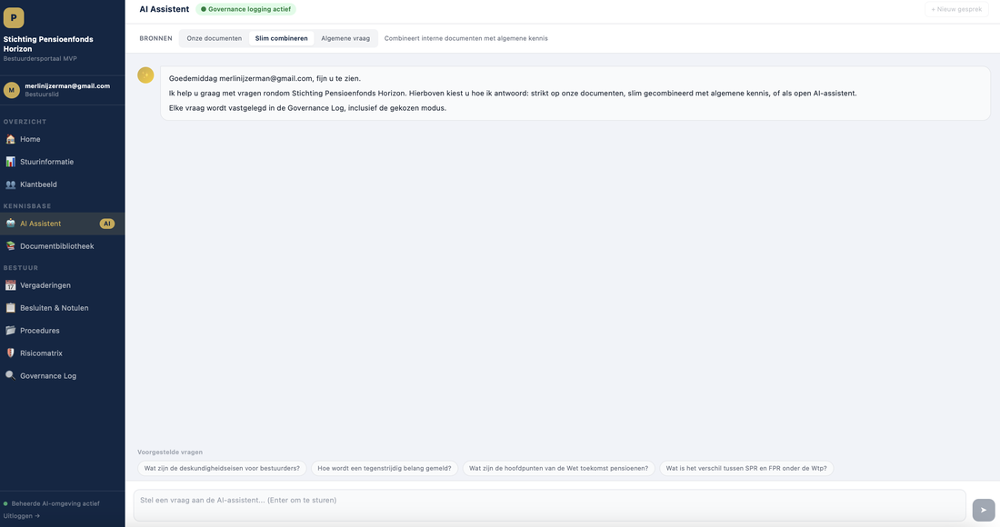
Voor bestuur én bestuursbureau: twee rollen in één systeem
Governance raakt beide rollen, dus het platform bedient beide. Het bestuursbureau is proceseigenaar: het organiseert de besluitvorming, bewaakt de dossiers en is de contracterende partij namens het fonds. Het bestuur is begunstigde en blijft eindverantwoordelijk: het platform versterkt de bestuurlijke disciplines, reflectie, tegenspraak, consistentie, verantwoording, zonder die verantwoordelijkheid over te nemen.
Waar we staan en waar we naartoe groeien
Vandaag is er een werkend MVP waarmee bestuur en bestuursbureau kunnen testen en experimenteren. De stip aan de horizon: volledige ondersteuning van het bestuurlijke werk, waarbij AI ook bij complexe vraagstukken een betrouwbare sparringpartner is. Die ontwikkeling vraagt om co-creatie met fondspartners.
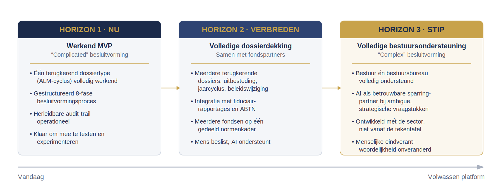
MVP in beeld
Op dit moment staat een werkend bestuursplatform met stuurinformatie, een AI-assistent met governance-logging, een vergaderomgeving met scheiding tussen persoonlijke voorbereiding en formele besluitvorming, en een (door AI raadpleegbaar) archief van documenten. Het eerste volledig werkende dossiertype is de wijziging van het beleggingsbeleid, als terugkerend proces, zodat de use case niet verdampt na een eenmalige transitie.
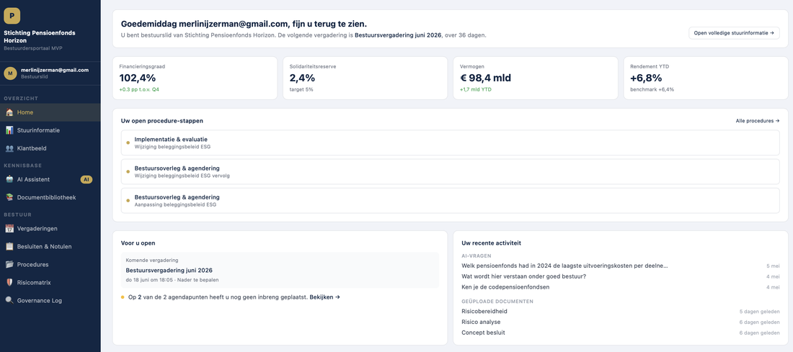
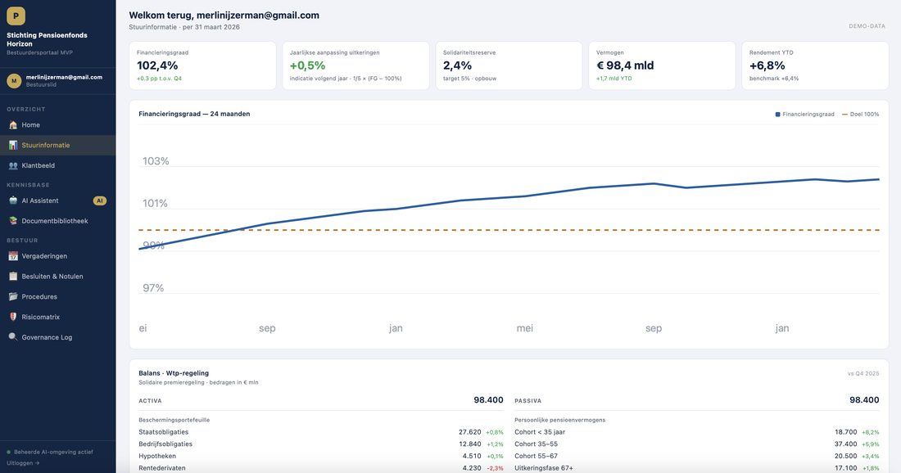
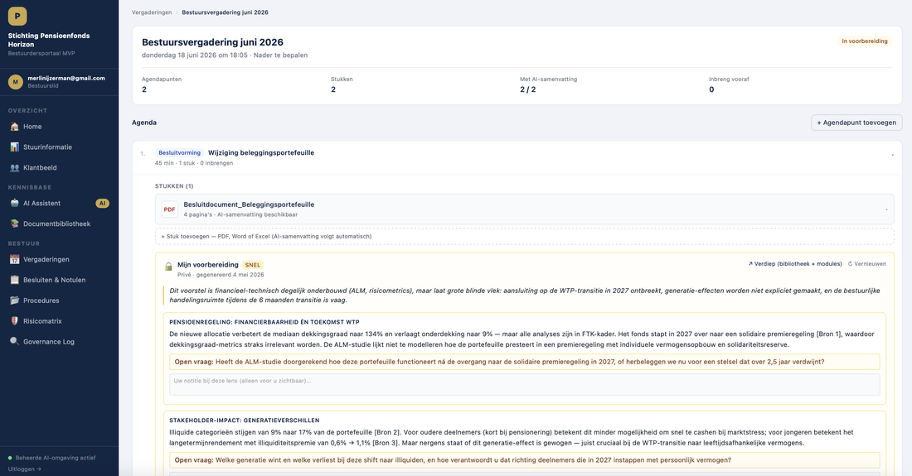
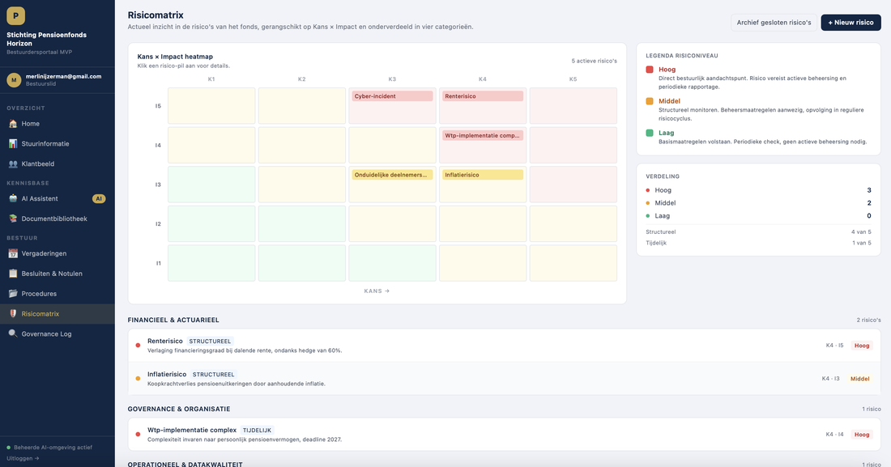
Alle tien schermen staan op groot formaat in de bijlage.
Hoe de lastige governance-vragen zijn opgelost
Een governance-platform mag zelf geen nieuwe governance-risico’s introduceren. Drie ontwerpkeuzes:
- Privé-notities: privé om te denken, transparant om te besluiten. Bestuurders hebben een persoonlijke werkruimte voor voorbereiding. Zodra een notitie de formele besluitvorming ingaat, wordt die zichtbaar en onderdeel van het dossier. Zo ontstaat geen onzichtbare AI-invloed, precies het probleem dat het platform oplost.
- Rol-differentiatie raakt de taak, niet de macht. De agent past zich aan de taak aan, een voorzitter bereidt de agenda voor, een bestuurslid krijgt de proces-context. Iedereen heeft toegang tot dezelfde feiten, hetzelfde dossier en dezelfde audit-trail. Geen informatie-asymmetrie, geen spanning met collegiaal bestuur.
- Toetsbaarheid: De audit-trail is ontworpen om aan te sluiten bij de toetsbaarheidseisen die DNB stelt aan navolgbaarheid en informatiebeveiliging (DNB Good Practice Information Security). Het platform produceert het bewijs; de toezichthouder beoordeelt.
Wat we vragen: een pilotpartner
We zoeken één bestuursbureau dat samen met ons de cyclus van het wijzigen van het beleggingsbeleid (of een ander proces naar keuze) volledig wil uitwerken in het platform. De pilot loopt op consultancy basis vanuit co-creatie: het bestuursbureau brengt domein- en proceskennis in, wij brengen decennialange pensioenervaring, de technologie en de governance-thesis.
Het verdienmodel wordt in de pilot ontwikkeld. Co-creatie betekent co-creatie: ook de prijsstructuur ontstaat uit de samenwerking. De eerste partner krijgt invloed op het eindproduct én een kick-back-regeling, een vergoeding bij latere afname van het product door nieuwe fondsen die via de pilot worden aangebracht. Vroege betrokkenheid wordt zo beloond.
Van onderzoek naar platform — de onderbouwing
Het platform is geen losse verzameling features. Elk onderdeel operationaliseert een ontwerpprincipe uit het promotieonderzoek. Vier voorbeelden van de koppeling tussen empirische bevinding en platformkeuze:
| Bevinding uit het onderzoek | Hoe het platform dit borgt |
|---|---|
| Het Governance Vacuum: AI-invloed op besluiten blijft ongereguleerd, terwijl data en techniek wel formeel zijn belegd. | AI-gebruik wordt onderdeel van de formele besluitvorming, met rolafbakening, vastlegging en koppeling aan het dossier. |
| De Sovereignty-Dependency-paradox: het menselijk oordeel is leidend, maar leunt steeds meer op AI voor informatie en analyse. | Human-in-the-loop als harde processtap: de agent adviseert en bereidt voor, de bestuurder besluit en bevestigt. |
| De Broad-to-Narrow-paradox: AI wordt ingezet voor bredere perspectieven, maar bevestigt in de praktijk vaak bestaande voorkeuren. | Debiasing-by-design: verplichte bronverwijzing, expliciete alternatieven en het uitdagen van aannames in elke AI-output. |
| Verificatie is een accountability-mechanisme, geen werkvoorkeur, zonder verificatie wordt verantwoordelijkheid nominaal. | Het 8-fase besluitvormingsproces bouwt expliciete reflectie- en toetsmomenten in, met een herleidbare audit-trail. |
Het onderzoek documenteert dertien paradoxen en zestien ontwerpprincipes; bovenstaande tabel toont een selectie.
Achtergrond
Technologie
EU-soevereine architectuur. Elk fonds heeft een strikt gescheiden eigen database en eigen encryptiesleutels. Publieke kennis (wet- en regelgeving, leidraden) wordt gedeeld; fondsdata blijft single-tenant. Geen training op fondsdata — standaard hygiëne, vanzelfsprekend.
Academische verankering
Gebaseerd op het promotieonderzoek “Bestuurlijke Besluitvorming in het Tijdperk van AI” (Nyenrode Business University, 2026), begeleid door prof. dr. Henry Robben en prof. dr. Theo Kocken. Geen generieke GRC-tool, maar de directe operationalisering van empirisch onderbouwde principes.
Contact
Robert Timmer
“Bestuurlijke Besluitvorming in het Tijdperk van AI”
Merlin IJzerman
“Waar governance en innovatie elkaar versterken”
Bijlage — MVP in beeld
Tien schermen uit het werkende bestuursplatform (demo-omgeving, Stichting Pensioenfonds Horizon).
1. Home — het persoonlijke startpunt
Toont kerncijfers, toont procedure-stappen voor deze bestuurder, komende vergadering en recente AI-vragen in één overzicht.
2. Stuurinformatie — financieel inzicht
Financieringsgraad over 24 maanden, balans onder de Wtp-regeling en kerncijfers, met duiding voor bestuurlijke sturing.
3. Klantbeeld — werkgevers
Inzicht in aangesloten werkgevers, premie-instroom en concentratierisico.
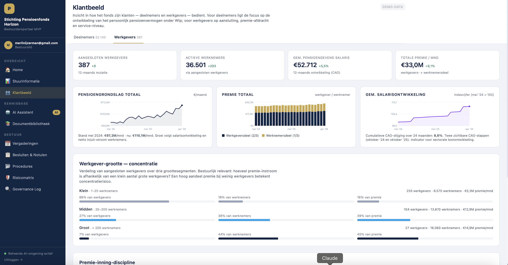
4. Klantbeeld — deelnemers en cohorten
Pensioenvermogen per leeftijdscohort: waar het fondsvermogen geconcentreerd is over de leeftijdsverdeling.
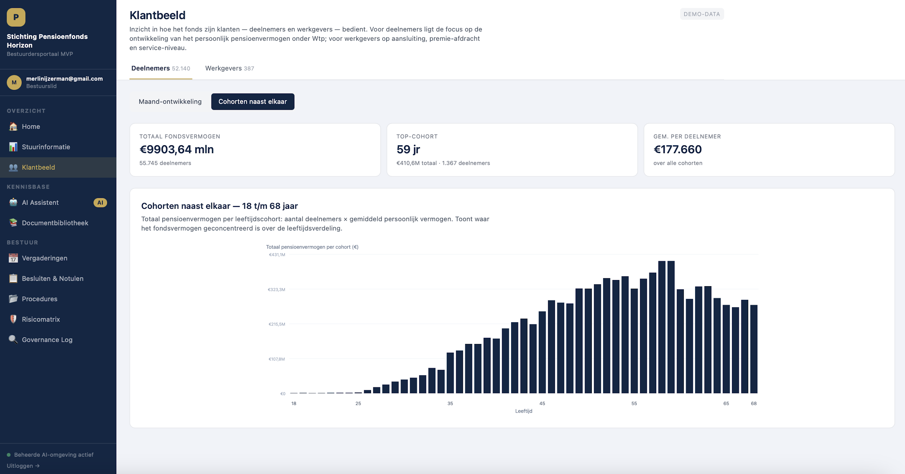
5. AI-assistent — met governance-logging
Elke vraag wordt vastgelegd in de Governance Log, inclusief de gekozen bronmodus: strikt op eigen documenten, slim gecombineerd, of als open assistent.
6. Documentbibliotheek — de kennisbasis (RAG)
Strikt gescheiden generieke kennis (DNB / AFM / Pensioenfederatie) en fondsspecifieke documenten, met indexeringsstatus.
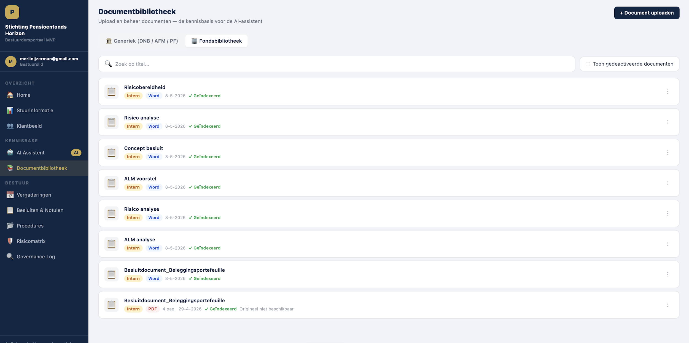
7. Vergaderingen — planning en voorbereiding
Komende bestuursvergaderingen met toegang tot het vergaderdossier met voorbereidende stukken.
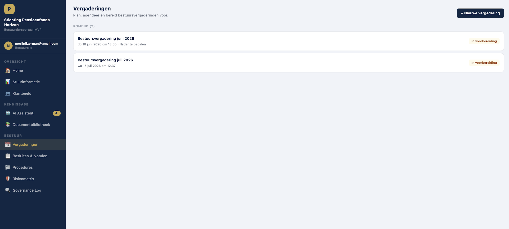
8. Vergaderdossier — privé-voorbereiding en AI-lens
Scheiding tussen privé-voorbereiding en formele besluitvorming. De AI-lens stelt kritische open vragen, onderstaand over de aansluiting van het beleggingsvoorstel op de Wtp-transitie.
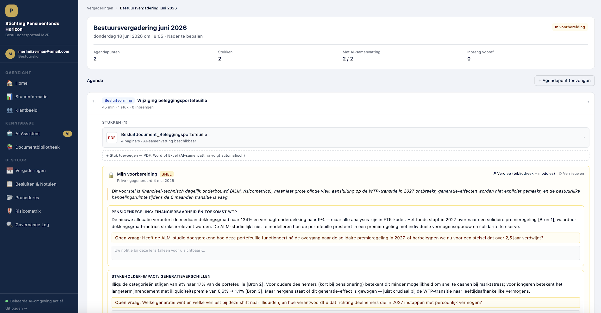
9. Procedures — lopende besluittrajecten
Beleidswijzigingen en besluittrajecten met hun positie in het gestructureerde proces stappenmodel (stap X van 6).
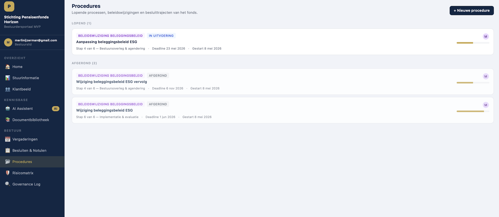
10. Risicomatrix — kans × impact
Actuele risico’s gerangschikt op kans en impact, onderverdeeld in vier categorieën.